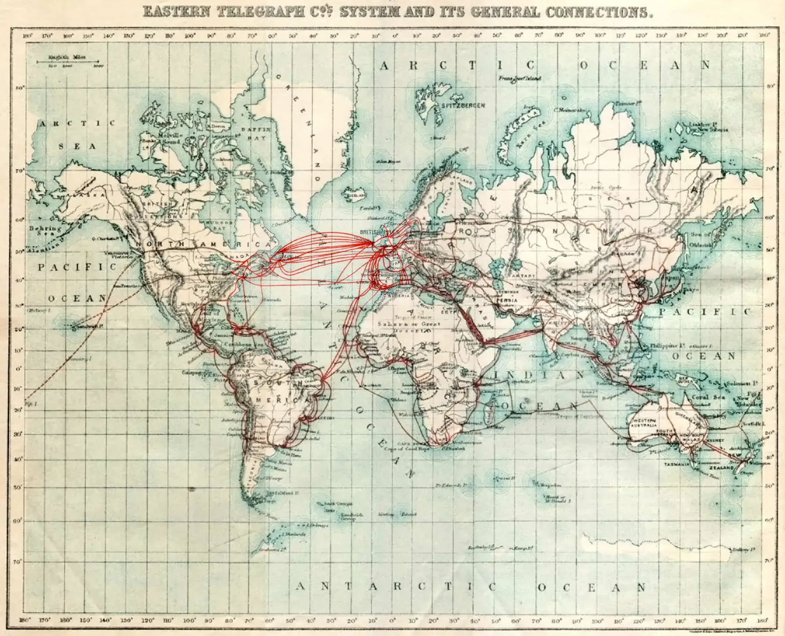

A software factory for venture portfolios
Every company,
one line.
 Common Ground
Common Ground
telemetry-qc › src › inspector.ts
1import type { Binding, Report } from './binding';
2import { grid, parseTime } from './grid';
3import { readValue } from './parse';
4
5// Completeness for one day of minute data. Missing values are not zeros.
6export function inspect(rows: string[][], b: Binding): Report {
7 const header = rows[0];
8 const ti = header.indexOf(b.timeColumn), vi = header.indexOf(b.signalColumn);
9 const body = rows.slice(b.skipUnitsRow ? 2 : 1);
10 const seen = new Map<string, number>();
11 let missingValues = 0, zeroValues = 0, malformed = 0;
12 let duplicateRows = 0, outsideGrid = 0;
13
14 for (const row of body) {
15 const t = parseTime(row[ti], b.timeBasis);
16 if (!t) { malformed++; continue; }
17 if (seen.has(t)) duplicateRows++;
18 seen.set(t, (seen.get(t) ?? 0) + 1);
19 const v = readValue(row[vi]);
20 if (v === null) missingValues++;
21 else if (v === 0) zeroValues++;
22 }
23
24 const expected = grid(b.start, b.end, b.cadenceSeconds);
25 const missingTimestamps = expected.filter((t) => !seen.has(t));
26 for (const t of seen.keys()) if (!expected.includes(t)) outsideGrid++;
27
28 return {
29 rows: body.length, uniqueTimestamps: seen.size, duplicateRows,
30 missingTimestamps, outsideGrid, missingValues, zeroValues,
31 malformedValues: malformed, physicalValidity: 'not_assessed',
32 };
33}
34
35// Units live in row two of the Saildrone export; never count them as data.
36export const marine: Binding = { timeColumn: 'time', signalColumn: 'WIND_SPEED_MEAN', skipUnitsRow: true };
- telemetry-inspector · sandbox: 32 MB, 800 ms, no network, no files
- ✓ NOAA: 1,440 rows, 55 missing wind values
- ✓ PVDAQ: 1,440 rows, negative power preserved
- ✓ Detect three missing timestamps and one duplicate
- ✓ First and last missing observations are detected
- ✓ Zero is not missing; malformed is separate
- ✗ Wrong units-row assumption is rejected · 1,439 rows, expected 1,440
- ✓ Unseen synthetic window, duplicates and off-grid rows
- 6 of 7 passed. Sent back to the agent.
telemetry-inspector
Sealed. Who should get it next?
Suggested by the factory, from each company’s workflow brief
- Maya Chen
 Palmetto · mapped to Sensor time-series v1
Palmetto · mapped to Sensor time-series v1Find missing timestamps and gaps in solar telemetry before daily reporting.
- Rhea Malik
 Mast Reforestation · mapped to Sensor time-series v1
Mast Reforestation · mapped to Sensor time-series v1Validate sensor readings and missing timestamps from field telemetry.
Shared with Maya at Palmetto. Only this exact version, and only her.
Palmetto · Maya Chen
Shared with you
- telemetry-inspector
 Fabio Rossi · Saildrone · c54c31b · 7 of 7 checks
Fabio Rossi · Saildrone · c54c31b · 7 of 7 checksFinds missing, duplicate and off-grid readings in any sensor time series.
telemetry-inspector · Palmetto’s mapping
Same code. Your solar data.
| Measured result | Original sample | With injected faults |
|---|---|---|
| Readings | 1,440 | 1,438 |
| Missing timestamps | 0 | 3 |
| Duplicate readings | 0 | 1 |
| Negative values kept | 913 | 913 |
Caught all injected faults. Core code unchanged.
Source c54c31b, byte for byte the version Fabio sealed at Saildrone.
Fabio Rossi at Saildrone shared telemetry-inspector with you. Version c54c31b, 7 of 7 checks.